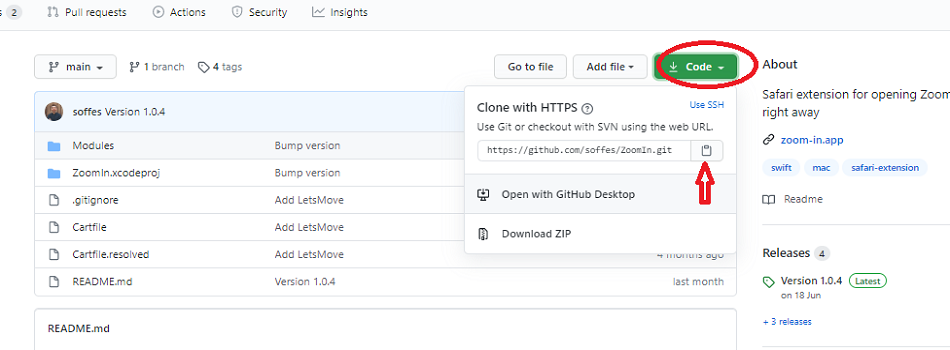
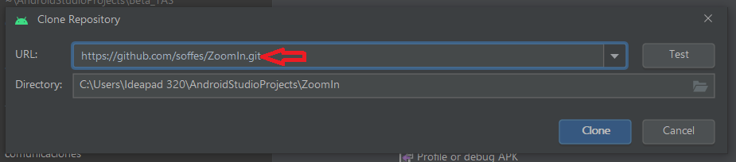
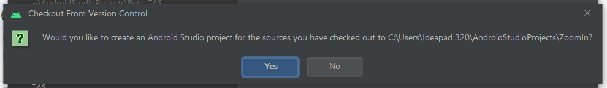
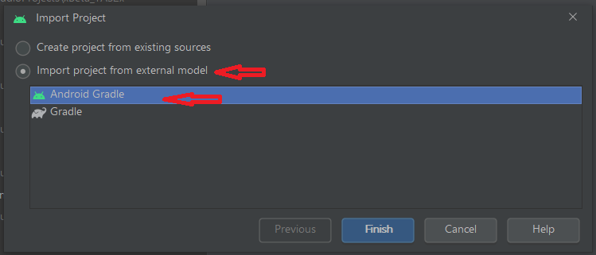

Git-Github
Clonar proyecto Github

Abrimos Android Studio, cancelando se cargue el último proyecto,
con lo cual se abre la ventana de inicio con las opciones de arranque,
en donde seleccionamos la pestaña de Check out Project Version Control
y escogemos Git
Se debe tener presente que para este procedimiento Android studio debe estar enlazada
con la cuenta personal de Github.

Se abre una nueva ventana: clone Repository; en la pestaña URL, colocamos la dirección que se tomó de la pestaña clonar en el proyecto de GITHUB, damos click en Clone
Aparece una ventana en donde pregunta: “si queremos crear un proyecto a partir del recurso”, a lo cual indicamos si
Aparece una nueva ventana, en donde dejamos señaladas las opciones de: import Project from external model y Android Gradle. Al dar click en Finish, se abre la ventana de Android studio con el nuevo proyecto
